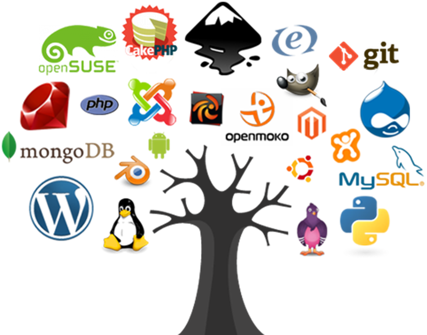

MVP for Gen Z Dev · chapter 5 of 28 in the published book · published, p. 20 v1.0.0, 2018, frozen · 2,299 words · the 2018 file · read and review
Open Source
- What
- Copyright License to release software that guarantees a number of freedoms
- Task
- Release some code under an Open Source license
- Price
- zero
The first thing to learn about Open Source is that it is not just a licence to release software or a way to get code for free (as in no cost).
Open Source is a way of thinking about code and applications, in a way that there isn't an explicit 'lock-in' on the user by the creator. When code is released under an Open Source license, the consumer of that code (namely the developer) gains a number of very important freedoms which have been proven to create very effective and powerful development environments.
You use Open Source applications and code everyday, can you name them?
There is nothing you can do today on the Internet that doesn't touch some Open Source code, and the amount of code that is currently available to you under an Open Source is insane.
An Open Source licence is a copyright license that gives you the right to access, modify and distribute source code. This is a variation of what has been called an Copyleft license. Copyleft is actually an Copyright license based on the idea of giving away rights to the user, instead of the most common use of Copyright, which takes right's away.
Think and behave in an Open Source way
As with the Creative Commons license, Open Source is a way of thinking and behaving about code.
You as a developer should be releasing everything you do with an Open Source license. This will make sure that your 'future self' can still access that code, while maximizing the potential usage and exposure of that code.
You should also be an active contributor to Open Source projects!
Not only you will learn a lot, that participation can really help you in finding a job.
If you are able to get your code changes approved and merged into the code-based of popular Open Source projects, you show the world the quality of your work and communication skills. I can guarantee to you that adding to your CV mentions of these contributions will immediately give you a lot of respect by your peers and interviewees. In fact a great way to get a job in a company is to contribute to an Open Source project hosted by that company.
Who uses Open Source

As you can see from the image above just about everybody is using Open Source these days, on all sorts of industries and use cases. Even Microsoft who used to call Open Source a cancer, eventually changed paradigm and now claims to 'love linux' and has recently bought GitHub.
History
Open Source is an idea created 20 years ago (in a meeting on February 3rd, 1998) with a number of heavy weights of the Free Software movement, who had the objective to create a common language and framework (and license) to be used by the community.
This lead to the creation of the Open Source Initiative who approves multiple community created Open Source Licenses.
One of the challenges that the Open Source license tried to address, was the more aggressive and viral nature of the GPL (General Public License). GPL requires that the developers release all code that uses or modifies the original GPL code, under the same GPL license.
Basically, once you add some GPL code to your app, you also need to release that app under GPL. In practice this proved to be to restrictive to the adoption of lots of libraries and applications. Even worse, that limitation went against what most Open Source creators want, which is the wide and seamless use of their code
Here is an definition of Open Source software from Wikipedia:
Open-source software (OSS) is a type of computer software whose source code is released under a license in which the copyright holder grants users the rights to study, change, and distribute the software to anyone and for any purpose. Open-source software may be developed in a collaborative public manner
If you look at the arc of history, there is a tendency for code to be open, even when there are massive forces that don't want that (i.e. the companies selling proprietary/closed-source software).
In addition to efficiency, innovation, reduced lock-in and better collaboration, Security is one of the reasons we need the code to be open.
At least when code is open and available, we have the ability to check what is going on, and be much more effective when reviewing its security (see Reflections on Trusting Trust for more on trust chains).
Note that this doesn't mean that Open Source software is auto-magically secure just by being Open Source (we still need an ecosystem that rewards or pays for security reviews and secure development practices)
Another major evolution in the history of open source was its effect on companies like Google and Facebook, where Open Source applications and code were a major contributor to their scalability and success.
Open source business models
It is amazing to see the change in the industry and thinking around Open Source. In early days of Open Source, me and many others were called 'communists', just by defending that code and ideas should be shared and made free.
These days there are tons of business models that have been proven to work on top of an Open Source model. For example here are 12 examples :
- Software Support Business Model, Software Services Business Model, Software as a Service (SaaS) Model
- AdWare Business Model
- Consulting Services, Independent Contractors/Developers, Indirect Services & Accessories
- Proprietary Software Model, Premium Software Model, Dual Licensing Model, Hybrid Model, Public Domain Model
- Platform Integration Services, Hardware Integration Model
- Non-Profit Business Models
- Defensive Business Model/Strategy
For Open Source to scale and be sustainable in the long term, it has to be supported by a viable economic model (one where there is a positive feedback loop of value for its creators and maintainers). These examples of Open Source business models (and the successful companies/services that use them) are behind a significant number of the open source contributions that we see today. Of course that there are other forms of receiving value form contributing to Open Source, namely learning something new, contributor brand enhancement or even just purely the joy we get from sharing knowledge.
In a weird way, the Open Source revolution has happened, most of the key battles have been won, but a large number of Gen Z are not aware of it (and are not poised to benefit from these business models and strategies). The danger is that there is still a lot to do in the Open Source world and we need the Gen Z to be a big driver and innovator.
Releasing code under an Open Source license
Question: 'Why don't you open source your code?'. I bet the answer is a combination of:
- "I don't think my code is good enough"
- "I'm embarrassed about my code"
- "Nobody will want to use my code"
The first thing to understand is that I have heard these same excuses from all sorts of developers and companies, for code in all sorts of quality and completeness.
This is your Lizard brain in action (making excuses of why you shouldn't do something)
The key is to just do it!
Create a GitHub or BitBucket repo, add the license and start building your community.
So how do you Open Source some code?
- Create a repo and add code to it
- Add file containing an Open Source license
- That's it!
And then, after you Open Sourced your app or code, what will happen next is: Nothing!
The reality is that it is very hard to create a community around an open source project. Most open source projects have been created and are maintained by a very small number of developers.
What you will have done by adding the license file to your code, is to create future opportunities for that code and send a strong message about your agenda (i.e. you are not going to lock in the future the users that are using your current code today):
- you are allowing somebody, which could be you, in the future to use your code
- you are also protecting your research so that if you move companies you can still use that code. There is nothing worse for a programmer than to having to rewrite something that was working ok, especially when it is a framework that supports a particular workflow.
I believe that we have moral imperative to share our ideas. I don't want to be the one that shuts down ideas and don't let others benefit and learn from them. These days, everything you do is a variation of what somebody has done before (i.e. you are adding an incremental change), after all you are sitting in shoulders of the giants that come before you.
Open Source as a way for companies to collaborate and find talent
There have been big success stories of companies collaborating internally externally (i.e. internal collaboration between different teams via open source code)
Ironically, although most developers have internal access to all code, the number of cross-team pull requests is very low. Publishing the same code under an Open Source license will help a lot in its internal reach, usage and collaboration.
This also means that by allowing others to use their code, clever companies are creating a great way to find programmers to hire, or companies to buy. As a developer you should take advantage of this and be an active contributor on the open source projects of the companies you want to work for. This is a great way to meet the key developers from those organizations, who may turn out to be key decision makers in your job application.
Open Source as a way to define the agenda
When I see code or applications that are not released under an Open Source license, namely the scenarios when the application is provided for 'free; (as in zero cost, not as in freedom), I always think 'What is their agenda?'. 'Why are they not Open Sourcing the code?'. 'Is this a plan to hook the users, make the dependent on the technology and then start charging at a later stage?'.
When the companies or authors release code under an Open Source license they allow their users to have the ability, if they want, to control their own destiny.
Although hard to quantify, I have seen lots of examples where much better engineering decisions have been made because there is no ability to lock the user in restrictive licenses.
The Cathedral and the Bazaar
As with many others, my paradigm shift into an Open Source mindset happened 20 years ago after I read the The Cathedral and the Bazaar essay and book, where Eric Raymond provides 19 lessons which are still as relevant today (2018) as when they were published (1998).
Here are some of the best ones:
- Every good work of software starts by scratching a developer's personal itch.
- Good programmers know what to write. Great ones know what to rewrite (and reuse).
- Release early. Release often. And listen to your customers.
- Given a large enough beta-tester and co-developer base, almost every problem will be characterized quickly and the fix obvious to someone.
- If you treat your beta-testers as if they're your most valuable resource, they will respond by becoming your most valuable resource.
- To solve an interesting problem, start by finding a problem that is interesting to you.
In the book, Eric compares the creation of proprietary applications to a Cathedral and the development of open source to an Bazaar.
In Eric's view, Cathedrals are: massive and expensive undertakings, take ages to create, don't have much innovation (apart from a couple major areas), have all sorts of top-down management problems, are super expensive, don't usually work very well (for the intended purposes) and don't usually turn up the way they were originally designed.
On the other hand, the Bazaars behave like living organisms, always innovating and with always somebody somewhere trying something new.
I actually prefer to see the beauty in both Cathedrals and Bazaars. Each has its magic and situations where they are exactly what is required.
This analogy is interesting because with the latest super-effective ways of developing software we can now build amazing cathedrals out of the Bazaar. Made possible by continuous refactoring and constant deployment of small/medium changes (which is what we get from effective test driven development (TDD) and DevOps environments). We create Cathedrals by continuously refactoring and improving what had started as a Bazaar.
This goes to the heart of what I have noticed in effective development environments with crazy-high code coverage. The more code and capabilities are added to the application, the faster changes can be made. The opposite of what happens in a lot of projects where the higher the quantity of code, the slower everything becomes.
Answered since, on the newsroom: The fork next door, What open source is, and what it is not, Open source is not free, The eyeballs get cheap. The map row.